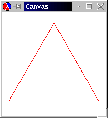

Related material in How to Design Programs: part v
to study
(1) a new form of program organization and
(2) a design recipe for creating such programs
Problem:
Develop a function that creates a blue background with n randomly
distributed balloons for an animated scene.
Or,
Develop a function that creates a blue background with n randomly
distributed falling stars for the “Collect Star Thalers” fairy-tale game.
We clearly need n distinct Posns:
;;Number → PosnList;; create a list ofndistinctPosns (define (background n) (cond [(zero? n) empty] [else (add-distinct-posn (background (sub1 n)))])) ;;PosnList → PosnList;; create and add aPosntolthat is distinct from all ;;Posns on there (define (add-distinct-posn l) (local ((define new-x (random WIDTH)) (define new-y (random HEIGHT)) (define new-p (make-posn new-x new-y))) (cond [(boolean? (member new-p l)) (cons new-p l)] [else(add-distinct-posn l)])))
What’s wrong with the underlined recursion?
Problem:
Sort a list of numbers via a divide-and-conquer strategy. That is, pick a pivot element; extract all those items that are smaller than the pivot and sort those; extract all those items that are larger than the pivot and sort those; and finally juxtapose the two sequences to get a sorted sequence.
;;NumberList → NumberList;; to create a sorted list of numbers fromalon(define (kwik-sort alon) (cond [(sorted? alon) alon] [else (append(kwik-sort (smaller (first alon) (rest alon)))(list (first alon))(kwik-sort (larger (first alon) (rest alon))))])) ;;NumberList → NumberList;; extract all items fromlthat are smaller thanpivot(define (smaller pivot l) (cond [(empty? l) empty] [else (cond [(< (first l) pivot) (cons (first l) (smaller pivot (rest l)))] [else (smaller pivot (rest l))])])) ;;NumberList → NumberList;; extract all items fromlthat are larger thanpivot(define (larger pivot l) (cond [(empty? l) empty] [else (cond [(> (first l) pivot) (cons (first l) (larger pivot (rest l)))] [else (larger pivot (rest l))])])) ;; test: (equal? (kwik-sort (list 3 8 1 2 9 7)) (list 1 2 3 7 8 9))
What’s wrong with the underlined recursions?
Problem:
Design a program that draws these triangles:

;;Posn Posn Posn → true;; to draw a Sierpinski triangle ata,b, andc, (define (sierpinski a b c) (cond [(too-small? a b c) #t] [else (local ((define a-b (mid-point a b)) (define b-c (mid-point b c)) (define c-a (mid-point a c))) (and (draw-triangle a b c) (sierpinski a a-b c-a) (sierpinski b a-b b-c) (sierpinski c c-a b-c)))])) ;;Posn Posn → Posn;; to compute the mid-point betweena-posnandb-posn(define (mid-point a-posn b-posn) (make-posn (mid (posn-x a-posn) (posn-x b-posn)) (mid (posn-y a-posn) (posn-y b-posn)))) ;;Number Number → Number;; to compute the average ofxandy(define (mid x y) (/ (+ x y) 2))
The design recipe uses the basic six steps.
Question: if the ideas
are ad hoc, how can we design a template systematically?
All functions based on generative recursion use the same basic outline. To find it, ask these four questions:
what are trivial solutions?
how do you generate new, slightly different problems?
how do you use the solutions to these problems?
how do you now to get the solution for the original problem?
We need a seventh step. Does it terminate?